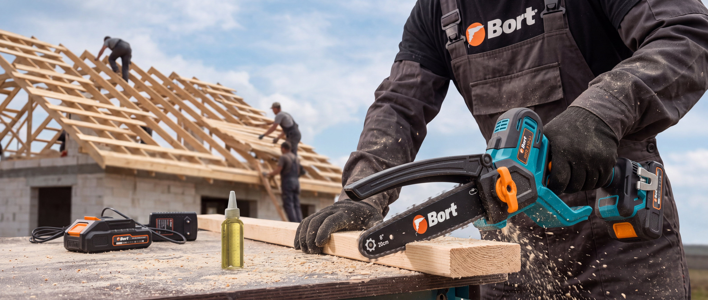
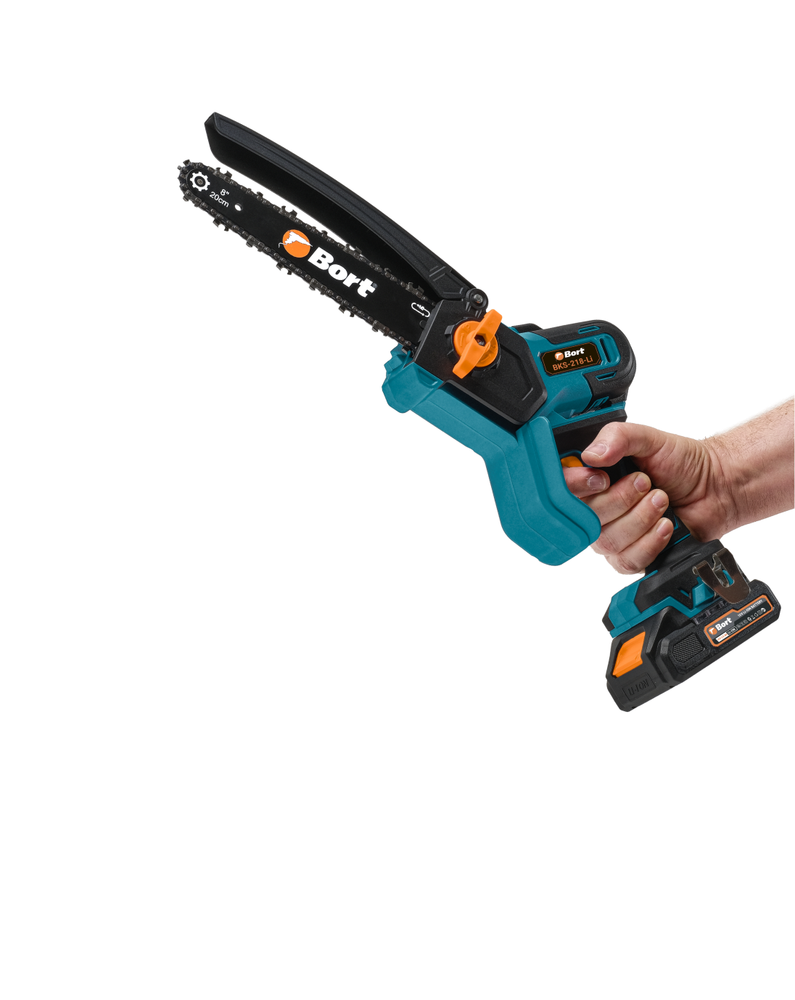
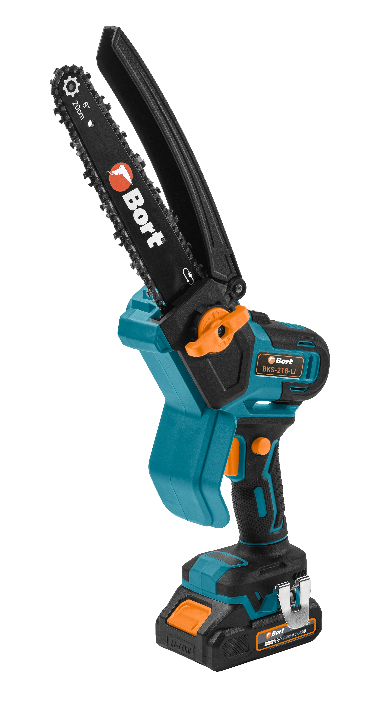
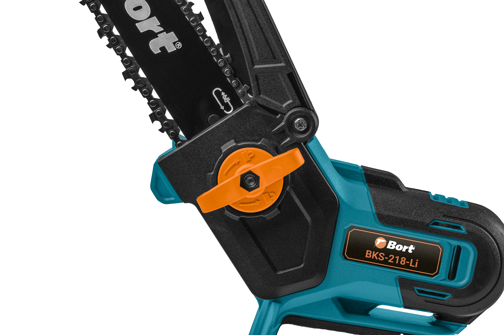
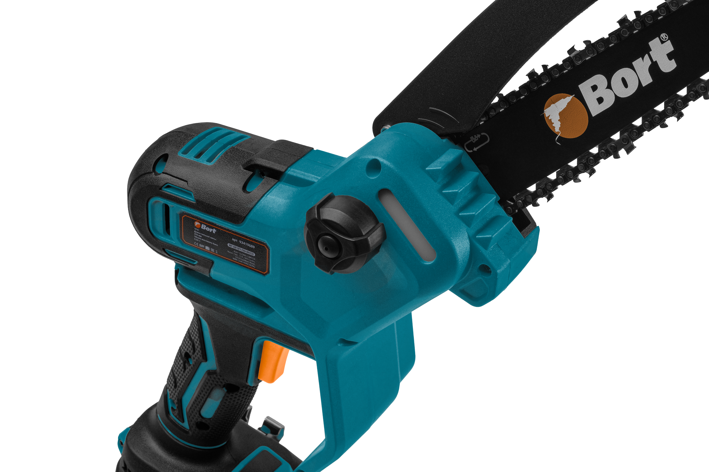
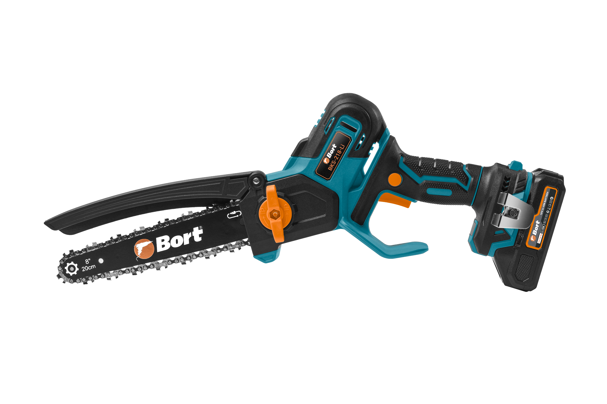

Пила цепная аккумуляторная
BKS-218-Li
- Бесключевая регулировка цепи
- Автоматическая смазка цепи
- Бесщеточный мотор
- Моментальная остановка цепи
- Защита от случайного запуска
BKS-218-Li
*2 АКБ и ЗУ в комплекте



Увеличенный ресурс, мощность и время работы по сравнению с обычными щеточными моторами.
Высокий КПД благодаря эффективному преобразованию энергии.
*по сравнению с обычными щеточными моторами
46 шт
Количество зубьев
1,1 мм
Толщина зуба
1/4 дюйм
Шаг цепи

За счёт оптимального соотношения шага (1/4") и тонкого профиля (1,1 мм) пила легко справляется с фигурной резкой, а 46 зубьев обеспечат точный и плавный распил.
Широкая защитная рукоятка принимает на себя удар при отскоке ветки и дополнительно защищает руку. Опорные зубцы на корпусе помогают зафиксировать пилу на заготовке.

Пила оснащена механизмом с подпружиненным толкателем натяжения. При растяжении цепи он корректирует положение шины, помогая поддерживать рабочее натяжение без ключа.

Автоматическая система смазки снижает трение и замедляет износ цепи и шины. Масляный бак объемом 0,04 л оснащен отверстием для удобной заливки, а кнопка подачи позволяет дополнительно смазать цепь перед началом или во время работы.
Для безопасной эксплуатации предусмотрены моментальная остановка цепи и защита от случайного запуска. Двусторонний предохранитель препятствует непреднамеренному включению, а после отпускания выключателя цепь быстро останавливается. Верхний кожух отделяет руку оператора от движущейся оснастки и разлетающейся стружки.
Масса пилы без аккумулятора составляет 1,41 кг. Компактный корпус снижает нагрузку на руки при обрезке ветвей и продолжительной работе.
Бесщеточный двигатель мощностью 1100 Вт обеспечивает производительный рез, экономно расходует заряд и не требует замены угольных щеток. Скорость холостого хода достигает 5000 об/мин, а скорость движения цепи — 10 м/с.
В комплект входят два аккумулятора емкостью 2 Ач и зарядное устройство. Пока одна батарея установлена в пиле, вторую можно держать заряженной или подключить к зарядке, сокращая перерывы.

Крепление аккумулятора с единым разъёмом на пиле позволяет использовать аккумуляторы любой емкости внутри экосистемы аккумуляторов Bort или Макита 18V LXT, номинальной мощности 18 В.
Это дает возможность использовать уже имеющиеся батареи и экономить до 70% стоимости инструмента при наличии аккумуляторов.

бесключевая регулировка цепи
Верхний кожух
зубцы
масляный бак
и контроль уровня масла
кнопка защиты
от случайного запуска
Аккумуляторная цепная пила BORT BKS-218-Li предназначена для обрезки ветвей и кустарников, распила досок, реек и небольших бревен, а также заготовки дров. Работает от аккумулятора 18 В, поэтому подходит для использования в саду, на даче, строительной площадке и вдали от электросети.
Бесщеточный двигатель мощностью 1100 Вт обеспечивает производительный рез, экономно расходует заряд и не требует замены угольных щеток. Скорость холостого хода достигает 5000 об/мин, а скорость движения цепи — 10 м/с. Это позволяет быстро и аккуратно распиливать древесину разных пород.
Компактная направляющая шина длиной 203 мм, или 8 дюймов, обеспечивает хороший контроль линии реза и упрощает работу в ограниченном пространстве. Цепь с шагом 1/4 дюйма, толщиной зуба 1,1 мм и 46 звеньями подходит для точного и плавного распила досок, реек, ветвей и небольших бревен.
Бесключевая система упрощает установку и регулировку цепи. Подпружиненный механизм автоматически натягивает шину по мере растяжения цепи, помогая поддерживать ее правильное положение без сложной ручной настройки.
Автоматическая система смазки снижает трение и замедляет износ цепи и шины. Масляный бак объемом 0,04 л оснащен отверстием для удобной заливки, а кнопка подачи позволяет дополнительно смазать цепь перед началом или во время работы.
Для безопасной эксплуатации предусмотрены моментальная остановка цепи и защита от случайного запуска. Двусторонний предохранитель препятствует непреднамеренному включению, а после отпускания выключателя цепь быстро останавливается. Верхний кожух отделяет руку оператора от движущейся оснастки и разлетающейся стружки.
Широкая защитная рукоятка принимает на себя удар при отскоке ветки и дополнительно защищает руку. Опорные зубцы на корпусе помогают зафиксировать пилу на заготовке, увереннее контролировать инструмент и выполнять глубокий рез.
Масса пилы без аккумулятора составляет 1,41 кг. Компактный корпус снижает нагрузку на руки при обрезке ветвей и продолжительной работе, а удобное расположение органов управления позволяет уверенно удерживать инструмент.
В комплект входят два аккумулятора емкостью 2 А·ч и зарядное устройство. Пока одна батарея установлена в пиле, вторую можно держать заряженной или подключить к зарядке, сокращая перерывы. Также в комплектацию входят направляющая шина, цепь и защитный чехол для безопасного хранения и транспортировки.
BORT BKS-218-Li совместима с аккумуляторной платформой Makita 18V LXT. Владельцы этой системы могут использовать имеющиеся совместимые батареи, объединяя несколько инструментов на одной аккумуляторной платформе.